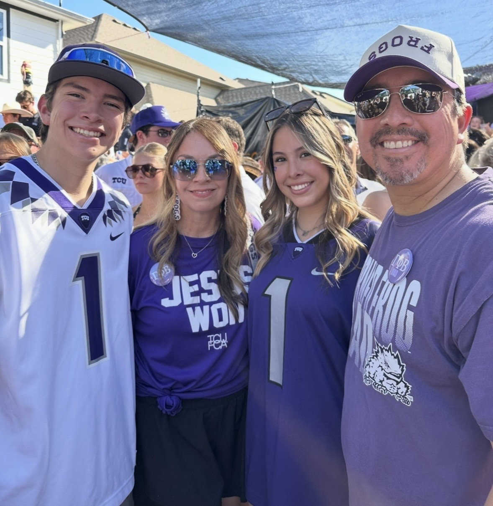

GRADUATING DECEMBER 2026
Texas Christian University
B.S. in Digital Culture and Data Analytics
After graduation, I plan to continue my education by pursuing an M.Ed. in Educational Learning with an emphasis in Higher Education at TCU.
Professional Background
My professional background spans a variety of settings, including the military, private sector, education, and higher education. These experiences have helped me develop strong skills in communication, organization, leadership, teaching, and working with people from different backgrounds.
Today, I support Graduate Career Management and Neeley & Associates at TCU's Neeley School of Business. My work gives me the opportunity to support students, faculty, employers, programs, events, and career-related initiatives within higher education.
WHAT I HAVE LEARNED
Current Skills
My DCDA coursework has allowed me to build practical technical and digital skills that I can apply to my work and future career.
Web Development
HTML, CSS, JavaScript, responsive design, localStorage, filtering, sorting, and interactive web applications.
Development Tools
VS Code, Git, GitHub, GitHub Desktop, GitHub Pages, debugging, testing, and version control.
Data & Analytics
Python, Pandas, data visualization, statistics, data organization, and identifying patterns in information.
Design & Communication
Accessibility, visual hierarchy, digital design, user-focused design decisions, and professional communication.
Learning Through Projects
One of the things I enjoy most is taking an idea and continuing to improve it as I use it. My Task Tracker project started as a simple way to organize projects and deadlines and developed into an interactive application with task status, editing, archiving, dashboard filters, localStorage, CSV export, and responsive design.
Building projects like this has helped me become more confident with JavaScript, debugging, accessibility, visual hierarchy, and making design decisions based on how someone will actually use a website or application.
Looking Ahead
I am especially interested in opportunities that bring together higher education, technology, communication, data, design, and community engagement.
As I move into graduate study, I want to continue building on both sides of my experience: the people-focused work I already do in higher education and the digital and analytical skills I have developed through DCDA.

PERSONAL CONNECTION
Life at TCU
TCU is an important part of both my professional and personal life. I am an employee, student, and TCU mom, and four members of my family are part of the TCU community.
Outside of work and school, I enjoy music, sports, spending time with my family, and cheering on the Horned Frogs.